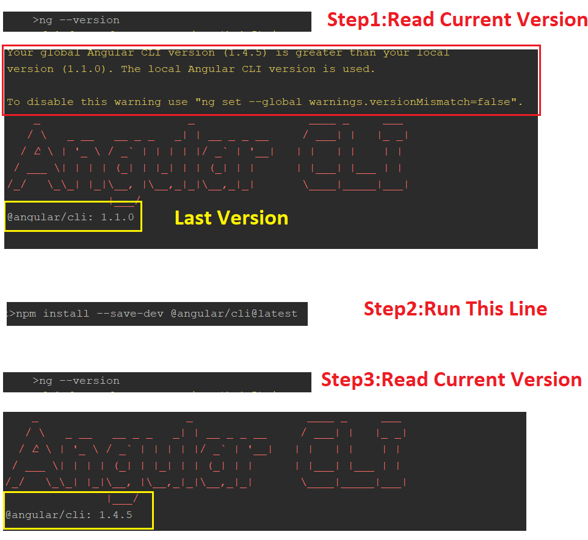

Global Angular CLI version greater than local version
When running ng serve I get this warning about my global CLI version being
greater than my local version. I don't notice any issues from this warning,
but I was wondering if the two versions should be in sync? Also, Is it
necessary to have a local version if you have a global version?
The warning:
Your global Angular CLI version (1.1.1) is greater than your local version (1.0.6). The local Angular CLI version is used.
Answer
To answer one of the questions, it is necessary to have both a global and local install for the tools to work.
If you try to run ng serve on an application without the local install of
the CLI (global install only), you will get the following error.
You have to be inside an Angular CLI project in order to use the serve command.
It will also print this message:
Please take the following steps to avoid issues: "npm install --save-dev @angular/cli@latest"
Run that npm command to update the CLI locally, and avoid the warning that
you are getting.
Other question: It looks like they do not have to be in sync, but it's probably best that they are in order to avoid any unusual behavior with the tool, or any inconsistencies with the code the tool generates.
Why do we need both the global install, and a local install?
The global install is needed to start a new application. The ng new <app-
name> command is run using the global installation of the CLI. In fact, if
you try to run ng new while inside the folder structure of an existing CLI
application, you get this lovely error:
You cannot use the
newcommand inside an Angular CLI project.
Other commands that can be run from the global install are ng help, ng
get/set with the --global option, ng version, ng doc, and ng
completion.
The local install of the CLI is used after an application has been built. This
way, when new versions of the CLI are available, you can update your global
install, and not affect the local install. This is good for the stability of a
project. Most ng commands only make sense with the local version, like
lint, build and serve, etc.
According to the CLI GitHub readme, to update the CLI you must update the global and local package. However, I have used the CLI where the global and local version vary without any trouble so far. If I ever run across an error related to having the global and local CLI versions out of sync, I will post that here.
Suggest
This is how I solved the issue.

Copy and run these commands:
ng version npm install --save-dev @angular/cli@latest ng version